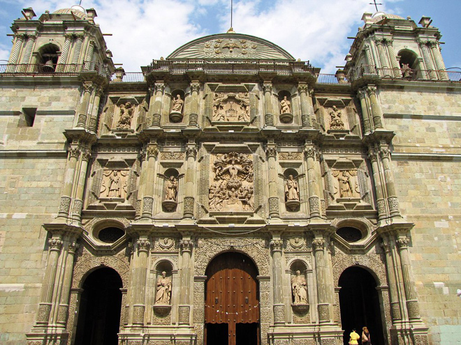
The Catedral Metropolitana de Nuestra Señora de la Asunción (Cathedral of Our Lady of the Assumption) is the seat of the Roman Catholic Archdiocese of Antequera, Oaxaca. Construction began in 1535 and it was consecrated on July 12, 1733. It enjoys a grand placement just north of the Zócalo with its main front facing the Alameda.
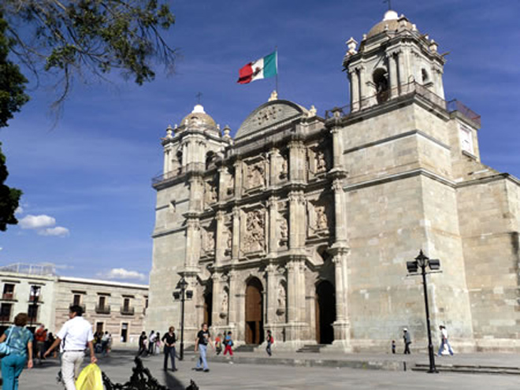
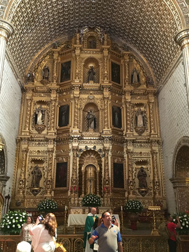
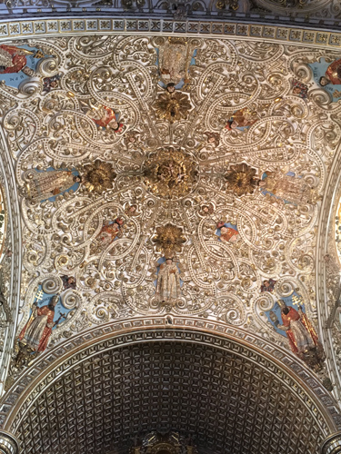
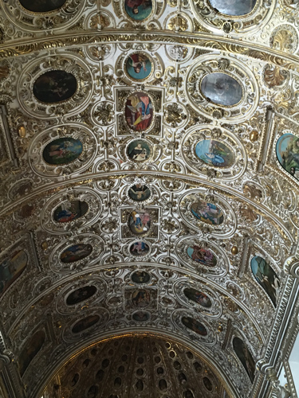
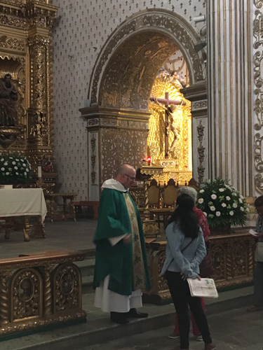
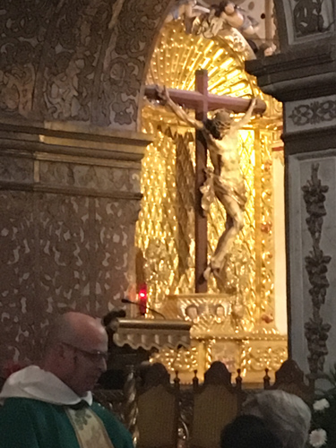
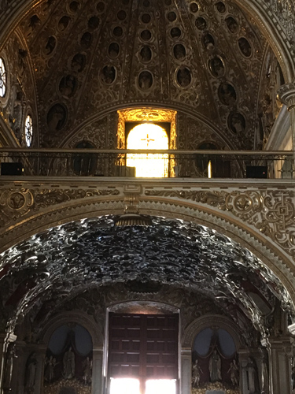
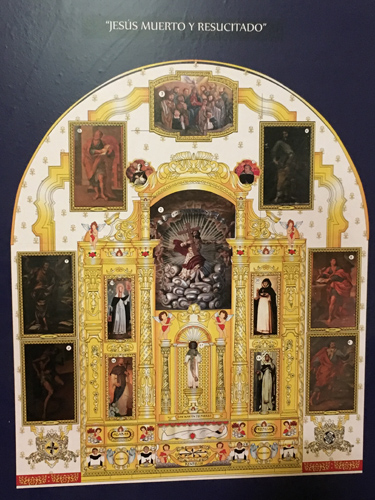
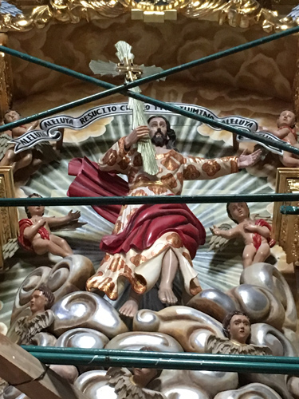
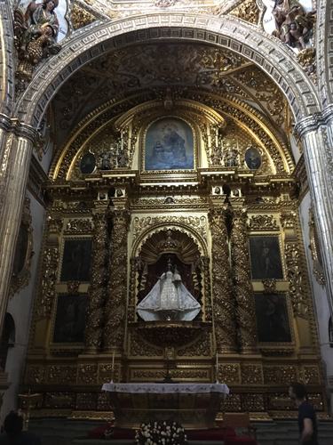
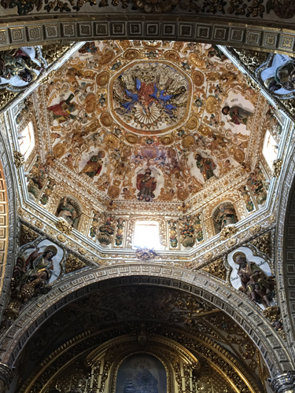
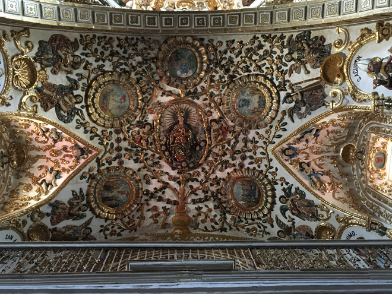
The Templo de la Preciosa Sangre de Cristo (Temple of the Precious Blood of Christ) is a church dedicated in 1689, it once served as the town cemetery, as shown in the tombs on the side and behind the building.
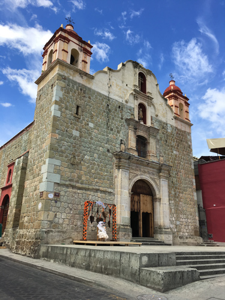
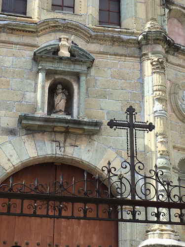
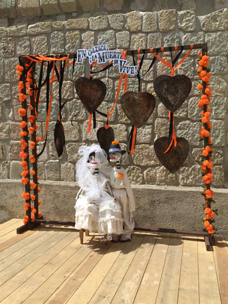
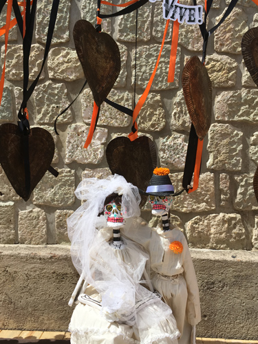
Many locals in Oaxaca consider the Basilica de Nuestra Señora de la Solidad (Our Lady of Solitude) their favourite, according to the local guide. The original baroque facade dates from 1690, while the florid and gold-tinged interior, which emits an extra sparkle above the altar, is a product of the late 19th century. Note the eight sculpted angels each holding a chandelier.
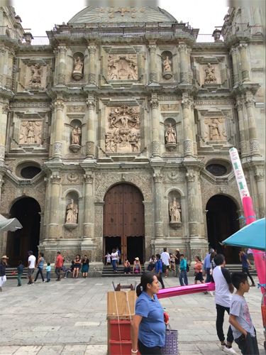
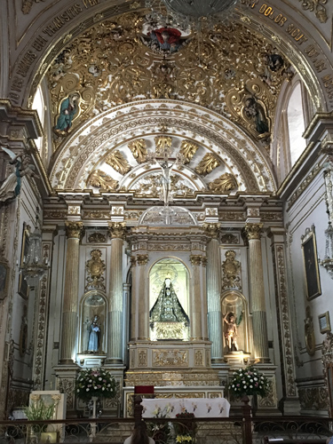
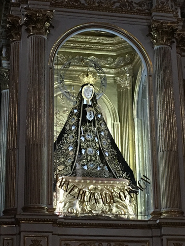
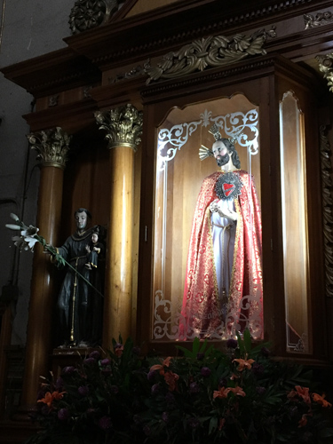
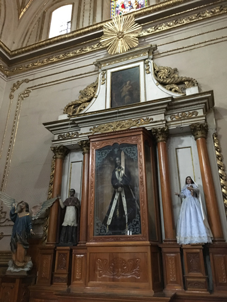
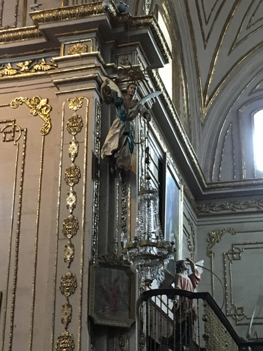
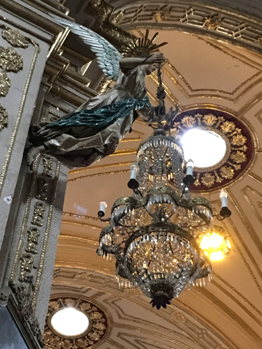
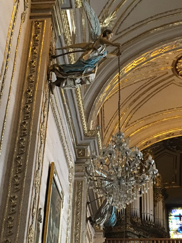
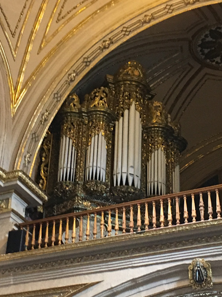
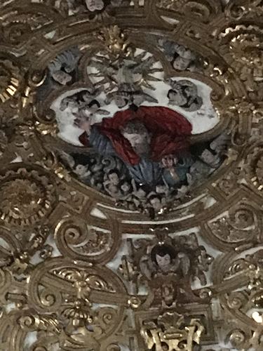
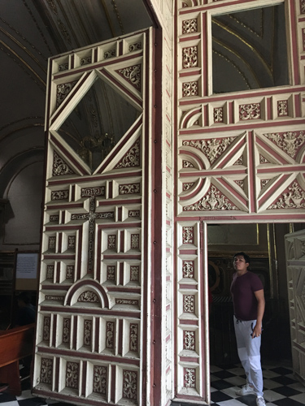
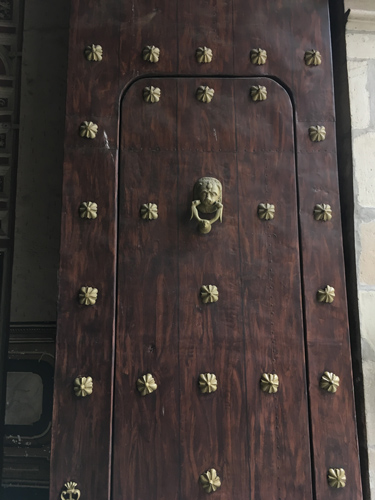
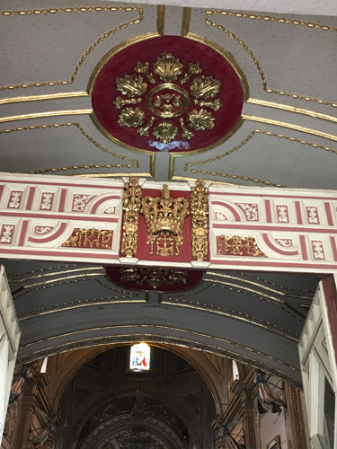
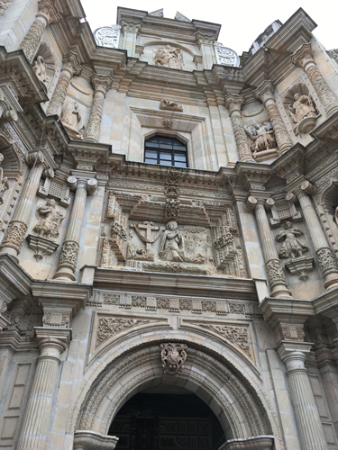
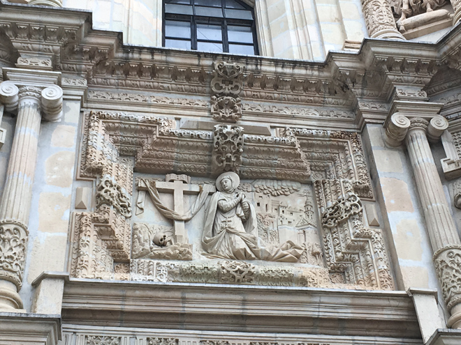
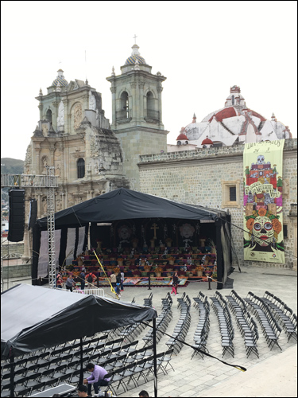
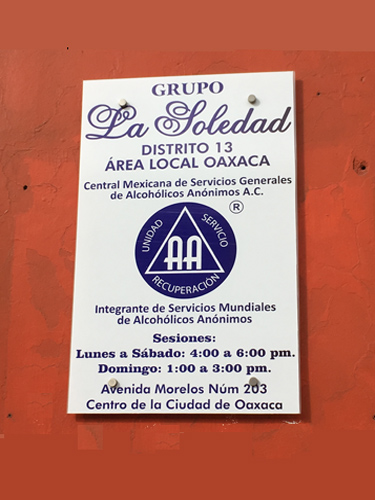
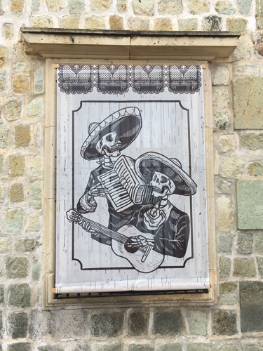
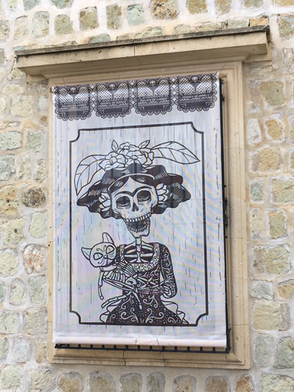
Then a walk back to the hotel through some handsome yet tranquil streets with houses showing some of their understated colonial charm. The city has justly earned itself a UNESCO World Heritage badge.
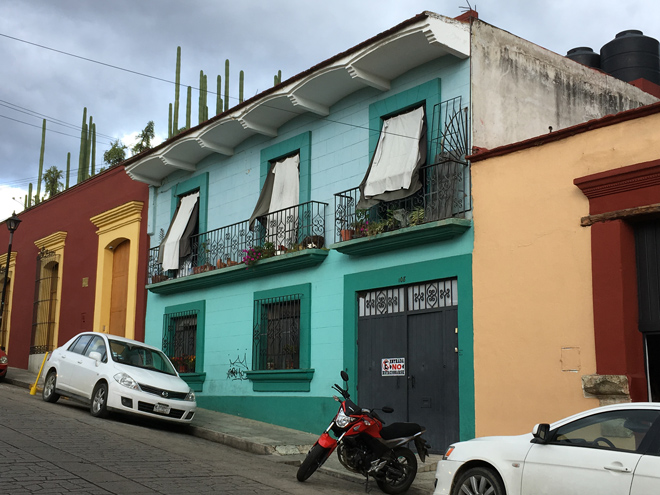
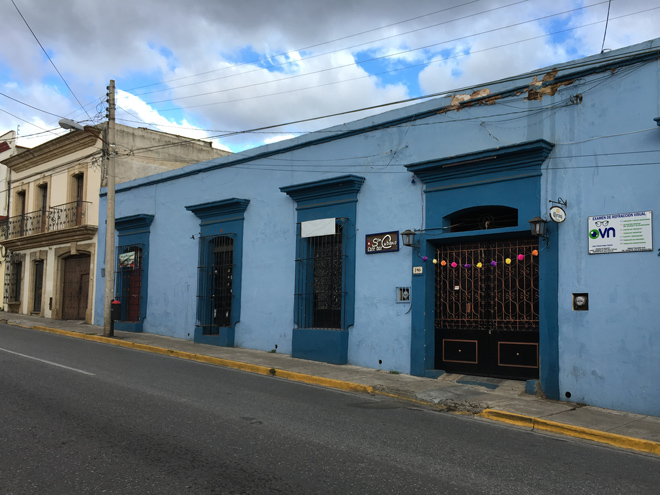
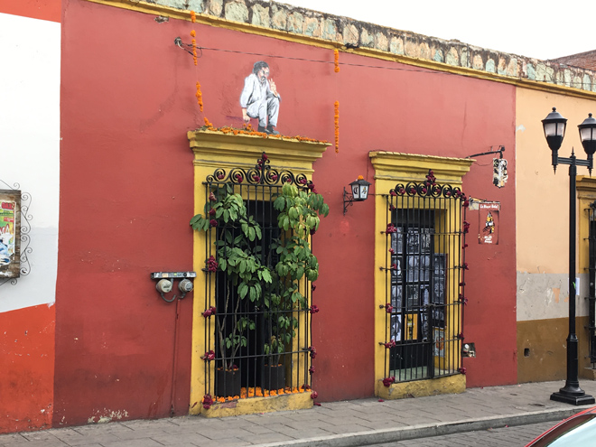
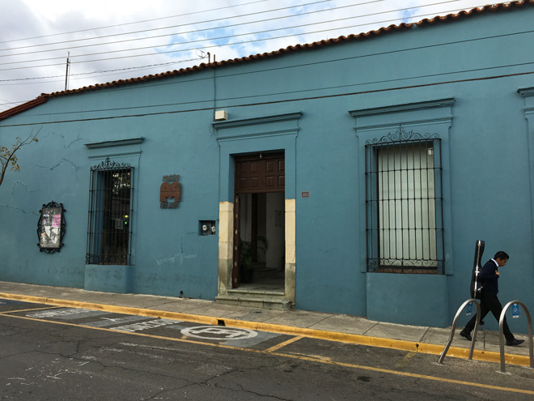
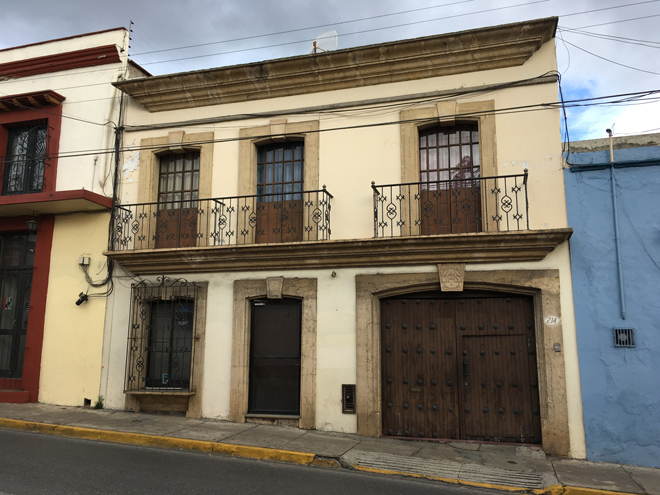